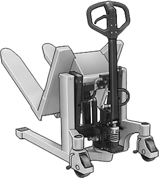

Big Catalog of Flexboxed Stuff
Roller Chain Breakers
Customize chain lengths for a perfect fit on your drive. All chain breakers are steel.
Locking Pins with Wire Retainer
Also known as linch pins and PTO pins, these take the place of clevis/cotter pin combinations.

Ultra-Hard Tungsten Carbide
Commonly referred to as carbide, tungsten carbide is harder than tool steel. With excellent wear resistance, it's used to machine tools such as end mills and inserts that last longer than those made of steel. All shapes are C2 tungsten carbide.
Ready-to-Use Mop Heads with Handle
Also known as deck mops, these mops come with a wood handle already attached. Mop head is off-white, 4-ply cotton with cut ends.
Ultra-Quiet Threaded Track Rollers
The soft rubber or plastic surface on these rollers creates less noise than the metal surfaces found on other track rollers. Also known as cam followers, track rollers support loads while guiding and positioning work. Thread the stud directly into a component or secure with a nut for through-hole mounting. All rollers have end seals to protect rolling elements from dirt and contamination.
Build-Your-Own Railings
Modular mix-and-match components allow flexible railing configurations.
Hand-Winch Cranes
Also known as davit cranes, these lift objects out of holes such as sewers. They have a hand-operated winch, with an automatic brake that holds your load securely when the handle is released. Cranes rotate 360° (except cranes with mobile base do not rotate).

Lift-and_tilt Lift Truck
Look no further if you need a truck that not only moves your load, but will also lift and tilt your pallets and containers for better load positioning.

Adjustable Air Springs
Isolate vibration and absorb shock from moving equipment, even with changing loads. Also for leveling and lifting, use compressed air to adjust air springs to the height and force required for your application. They’re often used with vibratory screen and conveyors; loading and transfer stations; and sensitive testing and measuring equipment.

Stay-Put Flexible Coolant Hose
This rugged hose is made of high-tensile-strength steel. Bend, twist, and set it to stay where you want.
General Purpose Low-Carbon Steel
One of the most widely used types of steel, low-carbon steel is weldable, machinable, and can be surface hardened by heat treating. It is suitable for a variety of applications, such as structural and power transmission components.
Wind- and Light-Blocking Mesh Fabric
Shade your site. Material is polypropylene mesh and can be used outdoors. Color is black.